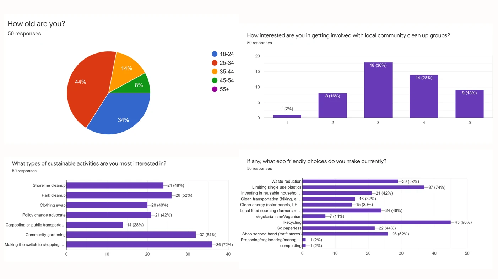
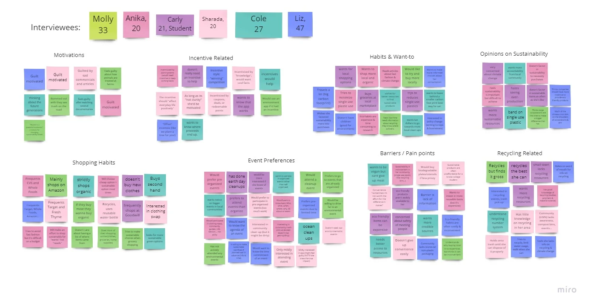
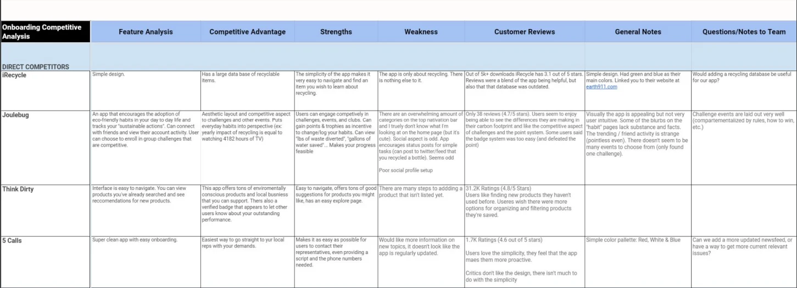
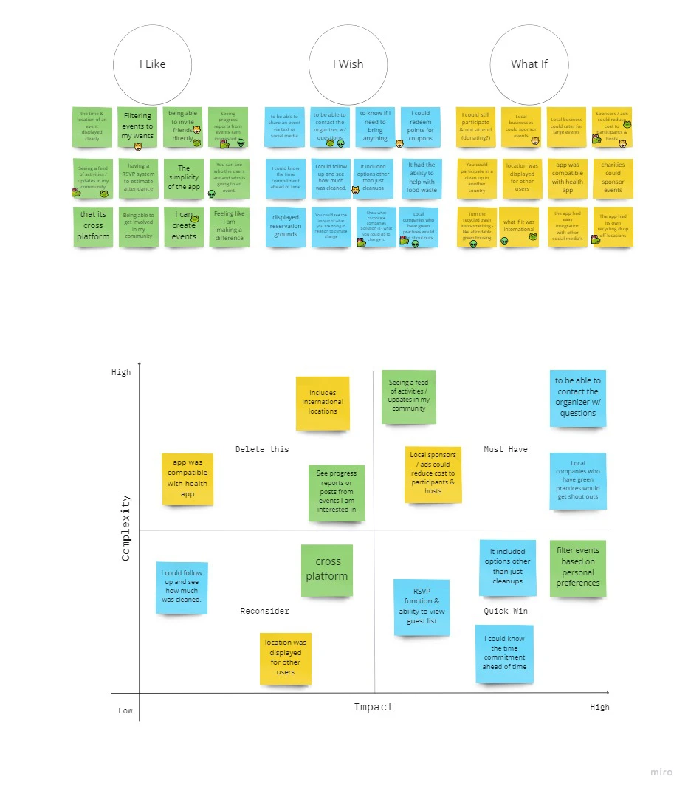
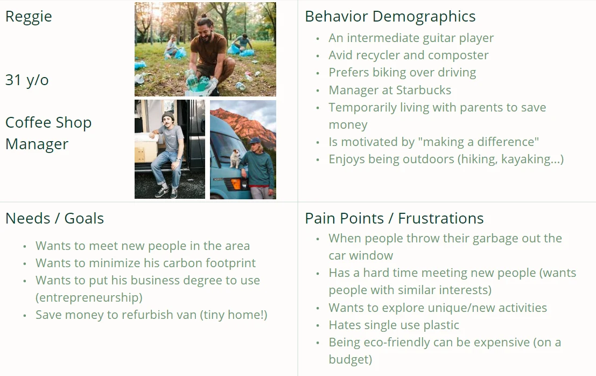
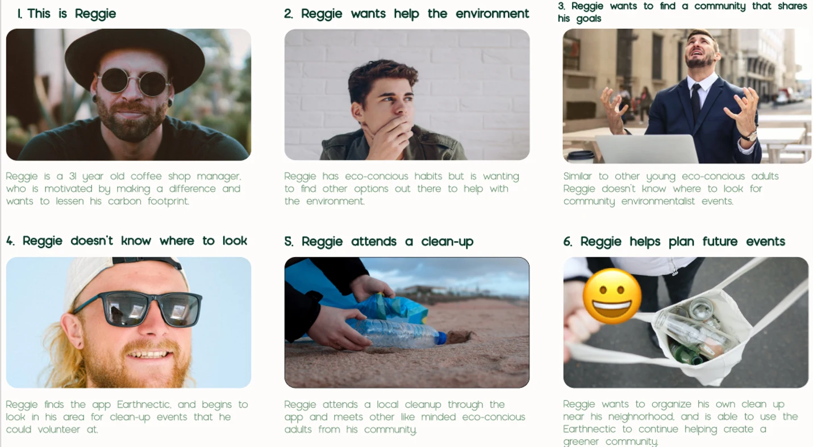
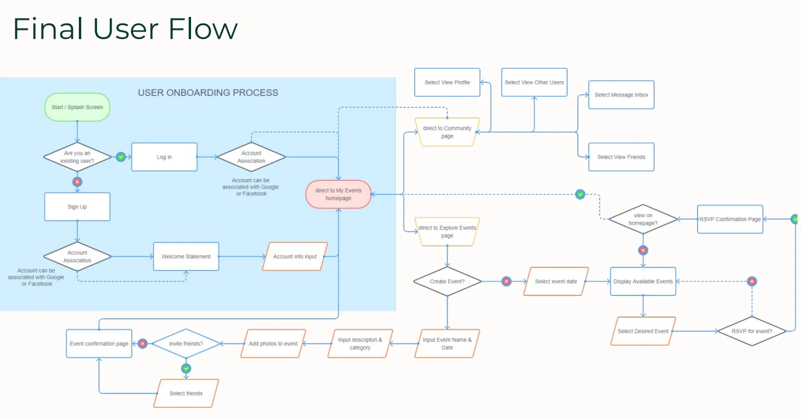
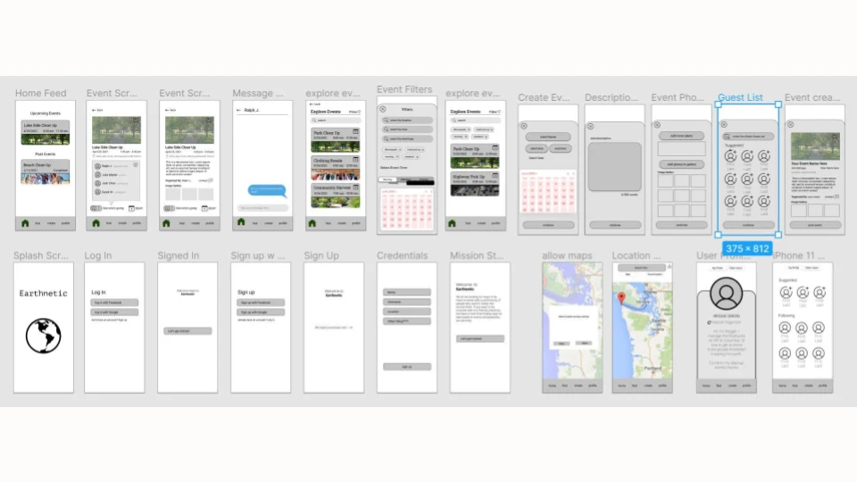
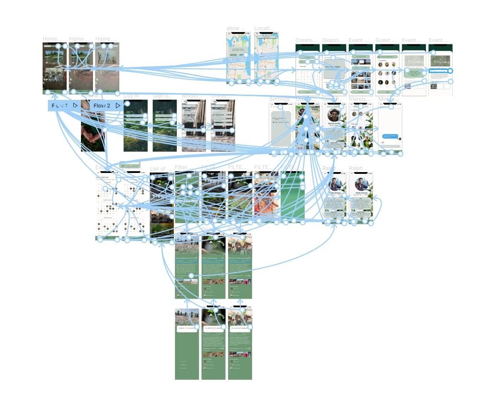

Overview & problem
Earthnetic — a change you can make — brings local environmental event discovery and planning into one mobile platform. Organizers and volunteers had difficulty finding relevant events on general-purpose services such as Facebook Events. A two-week project explored a focused alternative for taking action in the community.
My role & timeline
Freelance UX/UI project completed in a two-week sprint, resulting in a high-fidelity prototype. The work covered research, synthesis, feature prioritization, personas, storyboarding, wireframes, and prototype iteration.
Survey: 50 participants
A preliminary Google survey explored recycling habits, environmental issues, desired lifestyle improvements, and willingness to participate in local events. Results shaped the interview questions.

Interviews: 6 participants
Individual interviews examined sustainable-lifestyle barriers, past event experiences, and eco-conscious habits. Many participants already recycled and wanted to live more sustainably; cost and inconvenience were the main barriers.
Affinity diagram & competitive analysis
Research synthesis narrowed the needs to convenient, local, accessible, and affordable opportunities. Competitive analysis helped position a focused environmental-event experience.


Feature prioritization
Event planning emerged as the most important feature. A friend feed seemed useful early on, but testing showed it was a lower priority, so we deprioritized it to keep the core experience focused.

Personas & storyboard
Three personas were built from interviews and used throughout development. A storyboard illustrated the events leading someone to install the app, grounding design choices in a user journey.


Wireframes & user flow
Sketches became a low-fidelity prototype. Feedback from test participants informed the direction; the wireframe’s single-purpose structure became the backbone of the project and the reference for the final product.


High-fidelity prototype & takeaway
The sprint resulted in a high-fidelity prototype connecting event planning and discovery. The key design decision was to reduce the effort involved in participation through local relevance and a focused task structure.
